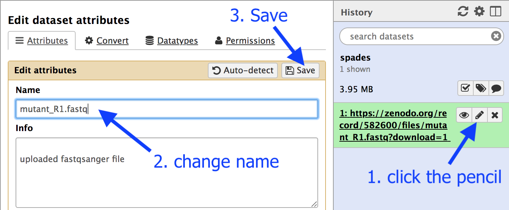

FastQC in Galaxy
After sequencing, the reads should be checked for their quality.
- This tutorial demonstrates how to use the tool called FastQC to examine bacterial paired-end Illumina sequence reads.
- The FastQC website is here.
Import the data
- Log in to your Galaxy instance (for example, Galaxy Australia, usegalaxy.org.au).
- Create a new history for this analysis.
- In a new browser tab, go to this webpage:

- Find the file called
mutant_R1.fastq - Right click on file name: select “copy link address”
- In Galaxy, go to
Get Data and then Upload File - Click
Paste/Fetch data - A box will appear: paste in link address
- Click
Start - Click
Close - The file will now appear in the top of your history panel.
The file name is quite long: let’s change it:
- Click on the pencil icon next to the file name.
- In the centre Galaxy panel, click in the box under
Name - Shorten the file name to
mutant_R1.fastq - Then click
Save

FASTQ is a file format for sequence reads that displays quality scores for each of the sequenced nucleotides.
- For more information about FASTQ format see this link.
- We will evaluate the
mutant_R1.fastq reads using the FastQC tool.
Run FastQC
In the Tool panel search box, search for “FastQC”; then click on the tool
The tool interface will appear in the centre Galaxy panel.
- for
Short read data from your current history :mutant_R1.fastq - Click
Execute - In the History pane, click on the “refresh” icon to see if the analysis has finished.
Examine output files
Once finished, examine the output called
Look at:
-
Basic Statistics Sequence length : will be important in setting maximum k-mer size value for assembly.Encoding : The quality encoding type is important for quality trimming software.% GC : high GC organisms don’t tend to assemble well and may have an uneven read coverage distribution.Total sequences : Total number of reads: gives you an idea of coverage.
-
Per base sequence quality : Dips in quality near the beginning, middle or end of the reads: determines possible trimming/cleanup methods and parameters and may indicate technical problems with the sequencing process/machine run. In this case, all the reads are of relatively high quality across their length (150 bp).

Per base N content : Presence of large numbers of Ns in reads may point to a poor quality sequencing run. You would need to trim these reads to remove Ns.
General questions you might ask about your input reads include:
- How good is my read set?
- Do I need to ask for a new sequencing run?
- Is it suitable for the analysis I need to do?
For a fuller discussion of FastQC outputs and warnings, see:
- the FastQC website link, including the section on each of the output reports, and examples of “good” and “bad” Illumina data.
For a more general introduction to quality control, see:
What’s next?
To use the tutorials on this website:
- ← see the list in the left hand panel
- ↖ or, click the menu button (three horizontal bars) in the top left of the page
You can find more tutorials at the Galaxy Training Network: